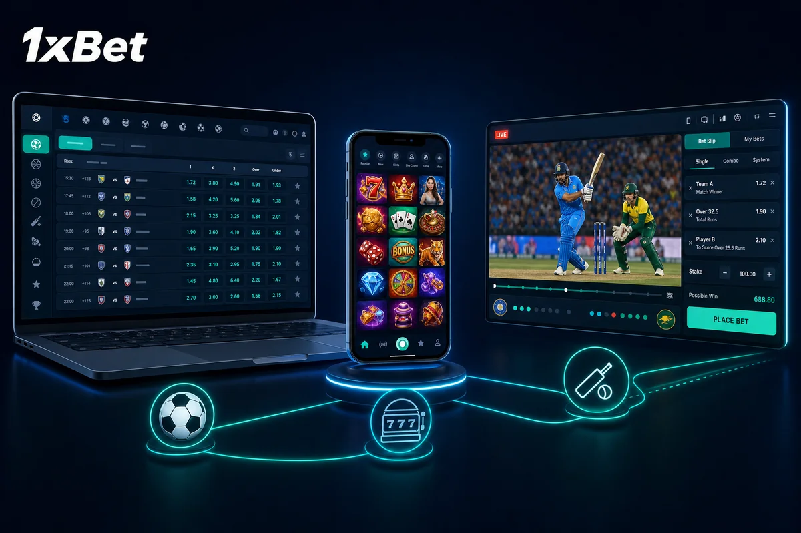
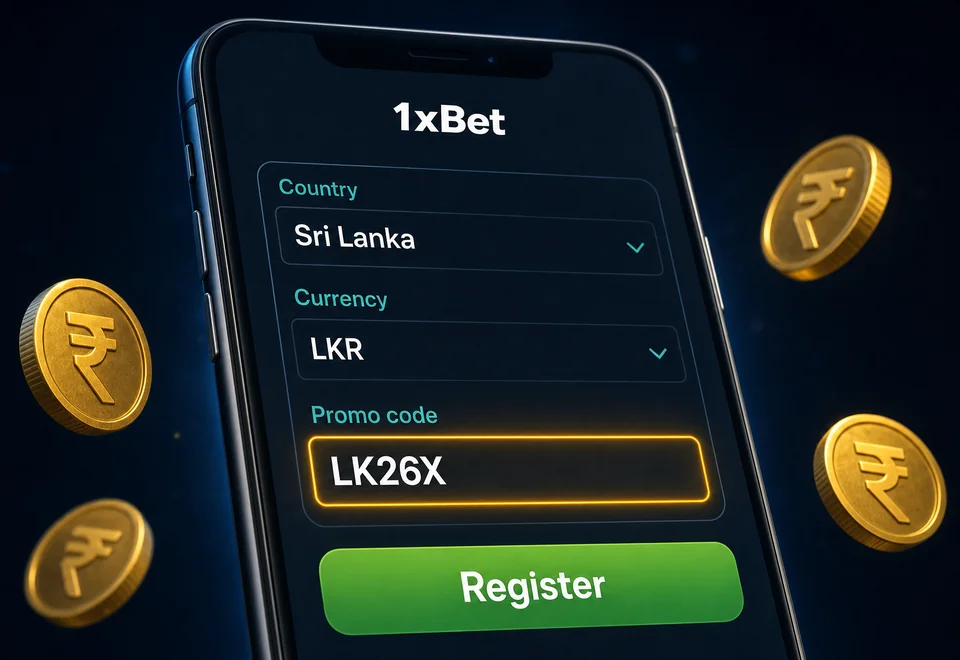
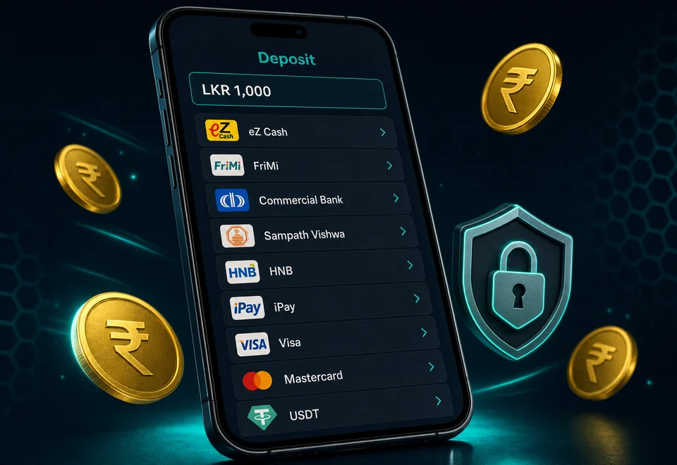

Aviator
Play
1xBet Sri Lanka at a glance
1xBet runs in Sri Lanka under a Curacao license, takes LKR deposits through every wallet you already use, and shows the Sinhala interface alongside English[span_4](start_span)[span_4](end_span). The sportsbook leads with cricket — LPL, Sri Lanka national-team series, IPL and the Asia Cup — and the casino lobby carries 7,000+ slot titles plus live tables[span_5](start_span)[span_5](end_span).
| Platform name | 1xBet Sri Lanka |
|---|---|
| Licence | Curacao 1668/JAZ |
| Accept players from Sri Lanka | Yes — LKR accounts, Sinhala UI |
| Languages | Sinhala, English, Tamil, Hindi, plus 60+ more |
| Services | Sportsbook, Online Casino, Live Dealer, Crash Games, TV Bet, Fantasy |
| Welcome Bonus | 120% sports up to LKR 50,000 OR casino LKR 550,000 + 150 FS on first deposit |
| Promo Code | LK26X |
| Payment methods | iPay, Commercial Bank, Sampath Vishwa, HNB, eZ Cash, LankaQR, Pay&Go, NTB, Seylan Bank, FriMi, Peoples Bank, Union Bank of Colombo, NDB, mCash, Bank Transfer, VISA, Mastercard, Skrill, AIRTM, Crypto |
| Min Deposit | LKR 300 |
| Min Withdrawal | LKR 400 |
| Platforms | Android APK, iOS PWA, Windows desktop |
| Popular Casino Games | Aviator, Lucky Jet, JetX, Gates of Olympus, Sweet Bonanza |
| Support | 24/7 live chat (Sinhala + English), email, phone |
The Sinhala build of the site mirrors every feature from the English one[span_6](start_span)[span_6](end_span). Cashier, bet slip and chat all switch language with a single toggle in the header[span_7](start_span)[span_7](end_span).

Is 1xBet legal in Sri Lanka?
Sri Lanka regulates land-based casinos under the Casino Business (Regulation) Act and the Betting & Gaming Levy Act, both of which target operators rather than individual players. The country has no statute that blocks Sri Lankan residents from using offshore-licensed sportsbooks. 1xBet sits in that offshore category — its Curacao 1668/JAZ licence covers cross-border operations and lets the brand serve LKR-account holders[span_9](start_span)[span_9](end_span).
What this means for you: registration, deposit, betting and withdrawal all stay within the platform's standard flow[span_10](start_span)[span_10](end_span). The tax treatment of any winnings falls on the individual under Sri Lankan personal-income rules; consult an accountant if your stakes or winnings are sizeable.
On the security side, 1xBet runs the same TLS 1.3 encryption and Curacao-audited RNG that powers its global product. Independent labs (eCOGRA, GLI) test the casino RTPs, and game results sit on a Provably Fair chain for crash titles like Aviator[span_11](start_span)[span_11](end_span).
If you spot a payment held in review, that is the KYC engine cross-checking your name against the funding source[span_12](start_span)[span_12](end_span). Identity verification clears the same business day once you submit an NIC scan and a recent utility bill[span_13](start_span)[span_13](end_span).
1xBet LPL betting hub
The Lanka Premier League runs for roughly four weeks each season and pulls the heaviest Sri Lankan betting volume of the year[span_14](start_span)[span_14](end_span). 1xBet treats LPL as a featured competition: dedicated landing page, expanded markets, early lines on outright winners, and live-only specials during the playoff weekend[span_15](start_span)[span_15](end_span).
| LPL market | Typical odds window | Notes |
|---|---|---|
| Match winner (1X2) | 1.40–3.20 | Live cash-out available |
| Top batter (per innings) | 3.50–9.00 | Settles on retired-out + DLS |
| Method of dismissal | 2.20–6.00 | Open per player |
| Six-hitter of the match | 1.80–4.50 | Counts boundary sixes only |
| First-innings total runs | O/U 165.5 standard | Half-line, no push |
| Tournament outright | Updated daily | Each-way available top 4 |
Beyond LPL itself, the cricket tab carries every Sri Lanka tour — Asia Cup pool stage, Bilateral series against India, Pakistan and Bangladesh, plus T20 World Cup runs[span_16](start_span)[span_16](end_span). Domestic Major Tournament and SLC inter-provincial fixtures appear during their respective windows[span_17](start_span)[span_17](end_span).
Tip for LPL season: the 120% sports welcome bonus pairs well with the long tournament outright market — your bonus funds clear by accumulator wagering on group-stage matches[span_18](start_span)[span_18](end_span).
Open LPL Page
1xBet bonuses and promotions
Sri Lankan accounts unlock the full 1xBet bonus menu from day one: the welcome split (sports or casino), accumulator-of-the-day boost, weekly cashback up to 30% on slot losses, Lucky Friday reload, and a no-deposit free-spin drop on featured slots[span_19](start_span)[span_19](end_span). Each carries plain wagering terms shown on the bonus card before you accept[span_20](start_span)[span_20](end_span).
Casino Welcome Bonus — LKR 550,000 + 150 FS
The casino route credits in a single hit on the first deposit[span_21](start_span)[span_21](end_span). Code LK26X unlocks the maximum cap[span_22](start_span)[span_22](end_span). Bonus credit lands in the bonus wallet alongside 150 Free Spins on the rotating Slot of the Week (Pragmatic Play, NetEnt or Endorphina titles cycle through)[span_23](start_span)[span_23](end_span):
- Match: 100% on the first deposit, capped at LKR 550,000 of bonus credit[span_24](start_span)[span_24](end_span).
- Free Spins: 150 spins on the rotating Slot of the Week (Gates of Olympus, Sweet Bonanza, Big Bass Bonanza, Wolf Gold cycle)[span_25](start_span)[span_25](end_span).
- Minimum first deposit: LKR 300[span_26](start_span)[span_26](end_span).
Bonus funds clear at 35× wagering through slots. Live dealer counts at 10% toward the requirement, table games at 5%. You have 7 days from the deposit timestamp to clear the rollover before the unspent balance expires.
Claiming the Casino Welcome Bonus
The bonus activates on the first qualifying deposit[span_27](start_span)[span_27](end_span). The flow is short and the bonus card shows your progress as you wager[span_28](start_span)[span_28](end_span):
-
Open the cashierAfter signup, click the green deposit button and pick a Sri Lankan rail — iPay, Commercial Bank, Sampath Vishwa, HNB or eZ Cash clear in seconds[span_29](start_span)[span_29](end_span).
-
Top up LKR 300+The casino route activates from the LKR 300 minimum[span_30](start_span)[span_30](end_span). Larger deposits scale the bonus credit up to the LKR 550,000 cap[span_31](start_span)[span_31](end_span).
-
Confirm the casino bonusIn Account → Bonuses, toggle the casino welcome on. The match and Free Spins land within a minute.
-
Wager through slots35× rollover on slots, 7-day window. Track your progress under My Bonuses — the bar updates after each spin.
1xBet sportsbook welcome bonus
If you spend more time on the bet slip than the slot reels, switch the welcome track at signup[span_32](start_span)[span_32](end_span). The sportsbook route gives a single 120% match on your first deposit up to LKR 50,000[span_33](start_span)[span_33](end_span). The bonus lands the moment the deposit clears and stays usable across every market on the board — cricket, football, rugby, e-sports[span_34](start_span)[span_34](end_span).
Rollover for the sports bonus is 5× through accumulator bets. Each accumulator needs three or more events with each leg priced at 1.40 or higher. Single bets, system bets and cashed-out tickets do not contribute toward the requirement.
Locking the Sports Bonus
Walk the form left-to-right and the bonus locks itself in[span_35](start_span)[span_35](end_span):
-
Pick Sri Lanka as countryThe signup form auto-selects LKR as currency once you set Sri Lanka[span_36](start_span)[span_36](end_span). Don't override the currency — bonus eligibility binds to LKR accounts[span_37](start_span)[span_37](end_span).
-
Choose the Sport welcome trackA radio button on the form toggles between Sport and Casino[span_38](start_span)[span_38](end_span). Sport is the default, but verify before submitting[span_39](start_span)[span_39](end_span).
-
Drop LK26X into the promo fieldThe code unlocks the upgraded 120% cap[span_40](start_span)[span_40](end_span). Without it you get the standard 100% rate at a smaller cap[span_41](start_span)[span_41](end_span).
-
Deposit LKR 300+iPay, eZ Cash and FriMi credit inside 60 seconds[span_42](start_span)[span_42](end_span). The bonus appears on the next page refresh.
About Promo Code LK26X
Promo codes work as a single-character lift on the welcome cap[span_45](start_span)[span_45](end_span). The current Sri Lanka code is LK26X[span_46](start_span)[span_46](end_span). You enter it on the signup form — the field hides under a small "+" expander next to the password row[span_47](start_span)[span_47](end_span). The platform does not back-apply codes once you finish registration, so verify it sits in the box before you submit[span_48](start_span)[span_48](end_span).
The same 1xBet promo code also unlocks seasonal promotions during major cricket windows: LPL season, the Asia Cup, and the build-up to World Cup tournaments each carry a short-form code drop tied to the welcome offer[span_49](start_span)[span_49](end_span).
Recurring bonuses for active players
Past the welcome split, the loyalty layer keeps a steady drip of value[span_50](start_span)[span_50](end_span). Most of these stack with each other — accumulator bonuses and Lucky Friday can both apply to the same Friday-evening LPL slip[span_51](start_span)[span_51](end_span).
| Promotion | How it pays |
|---|---|
| Weekly Cashback (up to 30%) | Slot losses from Monday 00:00 to Sunday 23:59 settle on Saturday. Your VIP tier sets the rate — Bronze 5%, Silver 10%, Gold 15%, Platinum 20%, VIP 25%, Royal 30%. Cash drops straight to the main balance, no rollover. |
| Lucky Friday | Deposit LKR 1,500+ on a Friday and the bonus card serves a 100% match up to LKR 50,000. 5× accumulator rollover. One per account per Friday. |
| Accumulator of the Day | The trading desk picks 3-5 events at boosted odds each morning. Build that exact slip and a win pays standard return + 10%. Common during the LPL group stage. |
| Cricket Combo Boost | Build a 5+ leg LPL or international cricket accumulator and the slip applies a tiered % boost — 5% at 5 legs scaling to 15% at 11+ legs. Settles automatically. |
| Birthday Free Bet | A LKR 1,000-2,000 free bet drops on the morning of your registered birthday. Single bet, min odds 1.50, expires 7 days. |
The points system runs in parallel. Every settled bet — win or lose — credits 1xBet points scaled to the stake. Points convert to cash or items in the Promo Store, and the conversion rate climbs as your loyalty tier rises.
1xBet mobile app
The 1xBet app packs the full sportsbook and casino into a build that runs on Android 5.1+, iOS 14+ and Windows 7+[span_52](start_span)[span_52](end_span). The APK weighs ~85 MB and stays light enough for daily use on Dialog, Mobitel and Hutch data bundles — both LTE and 4G hold a stable bet slip even outside Colombo[span_53](start_span)[span_53](end_span).
Android APK
Play Store blocks gambling apps in the South Asia region, so the APK ships directly from the site[span_54](start_span)[span_54](end_span). The install flow takes about a minute[span_55](start_span)[span_55](end_span):
-
Open the siteVisit 1xbet-sri.com from Chrome on your phone
-
Tap the Android badgeThe APK drops to /Download in ~30 seconds
-
Allow the sourceToggle "Install unknown apps" for Chrome when prompted
-
Open and log inThe app keeps you signed in for 30 days
The APK auto-checks for a new build every launch. If a patch waits, the prompt flags it and resumes your session after a 5-second install.
iOS PWA
The App Store policy on real-money gambling apps blocks a native iOS build in the LK region[span_56](start_span)[span_56](end_span). The PWA fills the gap — it runs full-screen, supports Face ID login, and pulls the same odds feed as the native version[span_57](start_span)[span_57](end_span). Add it from Safari in three taps[span_58](start_span)[span_58](end_span):
-
Open in Safari1xbet-sri.com on iPhone or iPad
-
Hit the Share iconSquare-with-arrow at the bottom bar
-
"Add to Home Screen"The icon lands beside your other apps
The PWA registers a service worker on first launch, so the cashier and bet slip work even on a flaky train-ride connection between Colombo Fort and Galle.
Windows Desktop
The Windows client suits players who watch live cricket on a second monitor[span_59](start_span)[span_59](end_span). The exe sits at ~150 MB installed and pulls the same odds feed as the browser version[span_60](start_span)[span_60](end_span):
-
Visit on PCFooter link "Mobile Applications"
-
Pick WindowsTab beside the Android badge
-
Download the installerSigned executable, ~25 MB compressed
-
Run and pinPin to taskbar for one-click access
Browser vs App — Which One Fits
The browser version works on any device with a modern browser, no install[span_61](start_span)[span_61](end_span). The native APK and Windows client add push alerts for live odds shifts and book-ahead reminders[span_62](start_span)[span_62](end_span). If your data plan caps tightly at the end of the month, the browser version keeps your install footprint zero[span_63](start_span)[span_63](end_span).
| Browser | Native app |
|---|---|
| Zero storage, no install | ~85 MB installed, ~150 MB on Windows |
| Needs solid signal to load each page | Caches odds locally, holds through brief drops |
| Same bonus catalogue | Adds push alerts for live odds and goals |
| One-click language toggle EN/සිංහල | Language toggle in Settings |
Getting started in three steps
The path from "never signed up" to "first bet placed" takes five minutes if your phone is in hand[span_64](start_span)[span_64](end_span):
-
Sign upPhone or email, LKR currency, code LK26X in the promo field[span_65](start_span)[span_65](end_span)
-
Top upiPay, Commercial Bank, Sampath Vishwa, HNB, eZ Cash — LKR 300 minimum, instant[span_66](start_span)[span_66](end_span)
-
Pick a marketLPL match, Champions League leg, or a slot — bet slip locks in one tap[span_67](start_span)[span_67](end_span)
-
Watch the event settleAuto-settlement runs the moment full time hits
-
Withdraw your winBack to iPay, FriMi or eZ Cash in under 24 hours[span_68](start_span)[span_68](end_span)
Bet history sits under Account → My Bets[span_69](start_span)[span_69](end_span). Open it to confirm settlement on closed tickets or to spot live in-play slips that still need a cash-out decision[span_70](start_span)[span_70](end_span).
1xBet registration and KYC
Signup runs on one page[span_71](start_span)[span_71](end_span). The form takes phone, email or a social link[span_72](start_span)[span_72](end_span). Sri Lankan accounts default to LKR — confirm the currency before you submit, because the platform locks it once the account exists[span_73](start_span)[span_73](end_span).
-
Pick a signup methodOne-click, phone, email, or Google. Phone is fastest — an OTP lands in 10 seconds on Dialog and Mobitel[span_74](start_span)[span_74](end_span).
-
Set country and currencySri Lanka selects LKR by default[span_75](start_span)[span_75](end_span). Both bind to the welcome bonus eligibility[span_76](start_span)[span_76](end_span).
-
Drop in the promo codeLK26X in the promo field expands the welcome cap[span_77](start_span)[span_77](end_span). The field hides under a small "+" expander[span_78](start_span)[span_78](end_span).
-
Choose the bonus trackSport (120% up to LKR 50,000) or Casino (LKR 550,000 + 150 FS on first deposit)[span_79](start_span)[span_79](end_span). You cannot switch later[span_80](start_span)[span_80](end_span).
-
Submit and verifyAccept the user agreement, set a 10+ character password, click Register[span_81](start_span)[span_81](end_span). The OTP confirms phone, the link confirms email[span_82](start_span)[span_82](end_span).

Identity Verification (KYC)
The cashier handles small deposits without KYC, but the first withdrawal triggers identity checks[span_84](start_span)[span_84](end_span). Submit your NIC scan from Account → Profile → Verification[span_85](start_span)[span_85](end_span). Add a recent utility bill or bank statement for proof of address[span_86](start_span)[span_86](end_span). The team clears most submissions the same business day[span_87](start_span)[span_87](end_span).
-
Profile → VerificationFrom the avatar menu, hit the shield icon[span_88](start_span)[span_88](end_span).
-
Upload NIC (front + back)JPG or PDF, 5 MB max per file. Take photos in daylight — over-flashed scans get rejected[span_89](start_span)[span_89](end_span).
-
Address proofCEB or NWSDB utility bill, no older than three months[span_90](start_span)[span_90](end_span). Bank statement also works[span_91](start_span)[span_91](end_span).
-
Source of funds (if flagged)Triggered on cumulative withdrawals above LKR 500,000. Salary slip or bank passbook scan covers it.
The platform blocks accounts under 18[span_92](start_span)[span_92](end_span). If the team flags suspicious activity — multi-IP login, mismatched names, identical devices on separate accounts — they may pause withdrawals until you respond to support[span_93](start_span)[span_93](end_span).
Logging Back In
Standard login takes phone or email + password[span_94](start_span)[span_94](end_span). If you set two-factor in Profile, the OTP step adds 5 seconds[span_95](start_span)[span_95](end_span). Forgotten password? Hit "Restore" — the recovery link or SMS arrives within a minute[span_96](start_span)[span_96](end_span).
Deposits via Sri Lankan rails
The cashier opens from the green Deposit button top-right[span_97](start_span)[span_97](end_span). The five most-used Sri Lankan rails — iPay, Commercial Bank, Sampath Vishwa, HNB and eZ Cash — settle in seconds[span_98](start_span)[span_98](end_span). The full list runs to 18 LKR methods plus crypto[span_99](start_span)[span_99](end_span). Card and bank flows take longer but match the same fee structure: zero on the 1xBet side[span_100](start_span)[span_100](end_span).
-
CashierTop-right Deposit button opens the full method list[span_101](start_span)[span_101](end_span).
-
Pick a methodTop-5 (iPay, Commercial Bank, Sampath Vishwa, HNB, eZ Cash) sit at the top, then LankaQR, Pay&Go, FriMi, mCash, NTB, Seylan, Peoples Bank, UBC, NDB, cards, bank transfer, Skrill, AIRTM and crypto[span_102](start_span)[span_102](end_span).
-
Set the amountLKR 300 minimum across every method[span_103](start_span)[span_103](end_span). Sliders show your bonus uplift in real time[span_104](start_span)[span_104](end_span).
-
AuthoriseWallet and bank apps push an in-app confirmation; cards use 3-D Secure; crypto shows the network address + QR[span_105](start_span)[span_105](end_span).
-
DoneWallet and bank-app deposits show in the balance under a minute[span_106](start_span)[span_106](end_span). Cards and bank transfer can take longer[span_107](start_span)[span_107](end_span).
The cashier carries the same flow inside the mobile app[span_108](start_span)[span_108](end_span).

First Deposit Bonus
Casino welcome up to LKR 550,000 + 150 FS
Top up from LKR 300 via iPay, Commercial Bank, Sampath Vishwa, HNB or eZ Cash[span_110](start_span)[span_110](end_span). Code LK26X at signup unlocks the maximum cap[span_111](start_span)[span_111](end_span).
Make a Deposit 💳
Placing your first bet
The bet slip works the same way across cricket, football, rugby and e-sports[span_112](start_span)[span_112](end_span). Pick a market, the odds land on the right rail, and the stake field locks your potential return[span_113](start_span)[span_113](end_span). A short primer on the main bet types:
- Match winner (1X2). Single outcome — home, away, or draw. The default cricket and football slip[span_114](start_span)[span_114](end_span).
- Accumulator. Stack multiple selections on one slip. Odds multiply, but a single losing leg burns the whole stake. Sports bonus rollover binds to this type[span_115](start_span)[span_115](end_span).
- Handicap. Spreads the strength gap. SL favourite at -1.5 wickets needs to win by two; underdog at +1.5 wickets covers narrow losses and outright wins[span_116](start_span)[span_116](end_span).
- Over/Under. Predict total runs / total goals above or below a line. Half-line markets (e.g. O/U 165.5 in LPL) leave no push outcome[span_117](start_span)[span_117](end_span).
- Player specials. Top batter, top six-hitter, first wicket method, anytime tryscorer in rugby[span_118](start_span)[span_118](end_span). These move fast — odds shift with team news[span_119](start_span)[span_119](end_span).
Live in-play markets add a cash-out toggle[span_120](start_span)[span_120](end_span). Hit it mid-event and lock partial profit before the final whistle[span_121](start_span)[span_121](end_span).
1xBet withdrawals — iPay, bank, crypto
Withdrawal eligibility starts the moment your bonus rollover completes and KYC clears[span_122](start_span)[span_122](end_span). Five steps from request to landed funds[span_123](start_span)[span_123](end_span):
-
Withdrawal sectionAccount icon → Withdraw[span_124](start_span)[span_124](end_span). The list shows methods available to your account[span_125](start_span)[span_125](end_span).
-
Pick a methodSame channel as your deposit when possible — KYC clears those fastest[span_126](start_span)[span_126](end_span).
-
Set the amountLKR 400 minimum on wallets[span_127](start_span)[span_127](end_span). The form rejects requests below the limit[span_128](start_span)[span_128](end_span).
-
Confirm2FA or email-link confirmation. The request enters the queue.
-
Wait for cleariPay/eZ Cash/mCash/FriMi land inside 24 hours, often within an hour during business time[span_129](start_span)[span_129](end_span). Bank rails (Commercial Bank, Sampath Vishwa, HNB, NTB, Seylan, NDB, Peoples Bank, UBC) 24-72 hours[span_130](start_span)[span_130](end_span). Crypto clears in under an hour after network confirmations[span_131](start_span)[span_131](end_span).
Two house rules to know before you request a payout: the name on the receiving account must match your 1xBet profile, and same-method-out is the default[span_132](start_span)[span_132](end_span). If you need to route to a different wallet, support can override after a verification ping[span_133](start_span)[span_133](end_span).
1xBet sports markets in Sri Lanka
The sportsbook lists 30+ sports and pulls in every fixture Sri Lankan punters care about — LPL group stage to Asia Cup, Champions League nights to Six Nations rugby[span_134](start_span)[span_134](end_span). Cricket sits as the featured discipline with the deepest market tree[span_135](start_span)[span_135](end_span).
🏏Cricket
SL #1 · LPL featuredThe cricket board treats LPL as a top-tier tournament — early outright lines, expanded player props, and live in-play with cash-out across all knockout fixtures[span_136](start_span)[span_136](end_span). Sri Lanka national team series carry the same depth, and the SLC Major Tournament gets full pre-match and live coverage during the domestic window[span_137](start_span)[span_137](end_span).
- Lanka Premier League (LPL)[span_138](start_span)[span_138](end_span)
- SL national team bilateral series — Tests, ODI, T20I[span_139](start_span)[span_139](end_span)
- Indian Premier League (IPL)[span_140](start_span)[span_140](end_span)
- Asia Cup & T20 World Cup[span_141](start_span)[span_141](end_span)
- SLC Major Tournament + inter-provincial[span_142](start_span)[span_142](end_span)
- Big Bash League (BBL), CPL, PSL[span_143](start_span)[span_143](end_span)
Markets: match winner · top batter · top six-hitter · method of dismissal · player runs O/U · partnership over · innings totals[span_144](start_span)[span_144](end_span)
Bet on Cricket
⚽Football
300+ leagues weeklyThe Champions League and EPL lead the football tab[span_145](start_span)[span_145](end_span). Local Football Sri Lanka Super League fixtures sit alongside the major European leagues during their season window[span_146](start_span)[span_146](end_span). Live odds refresh every 2-3 seconds and over 150 markets per match are available on top European fixtures[span_147](start_span)[span_147](end_span).
- FSL Super League (Sri Lanka)[span_148](start_span)[span_148](end_span)
- English Premier League[span_149](start_span)[span_149](end_span)
- UEFA Champions League · Europa League[span_150](start_span)[span_150](end_span)
- Spanish La Liga · German Bundesliga · Serie A[span_151](start_span)[span_151](end_span)
- AFC Asian Cup & World Cup qualifiers[span_152](start_span)[span_152](end_span)
- Copa Libertadores & MLS[span_153](start_span)[span_153](end_span)
Markets: correct score · both teams to score · player props · over/under · handicaps · first goalscorer · corner totals · card totals[span_154](start_span)[span_154](end_span)
Bet on Football
🏉Rugby
SL National Team coverageRugby holds steady SL fan support — schoolboy rugby finals draw the same crowds as cricket Tests[span_155](start_span)[span_155](end_span). 1xBet runs pre-match and in-play markets across union and league, with the Dialog Rugby League and Sri Lanka XV covered alongside global tournaments[span_156](start_span)[span_156](end_span).
- Sri Lanka national XV (Asia Rugby)[span_157](start_span)[span_157](end_span)
- Dialog Rugby League (DRL)[span_158](start_span)[span_158](end_span)
- Rugby World Cup & Six Nations[span_159](start_span)[span_159](end_span)
- Super Rugby Pacific[span_160](start_span)[span_160](end_span)
- The Rugby Championship (SANZAAR)[span_161](start_span)[span_161](end_span)
- NRL (Rugby League)[span_162](start_span)[span_162](end_span)
Markets: match winner · handicap · total points · first try scorer · winning margin · half-time/full-time[span_163](start_span)[span_163](end_span)
Bet on Rugby
🎮E-Sports
Live 24/7The tournament feed runs around the clock[span_164](start_span)[span_164](end_span). The International, IEM, PGL Major and regional qualifiers show up with map-level markets and tier-2 events from South-East Asia[span_165](start_span)[span_165](end_span). Live odds for first blood and round-by-round Counter-Strike refresh in real time[span_166](start_span)[span_166](end_span).
- CS 2 (Counter-Strike 2)[span_167](start_span)[span_167](end_span)
- Dota 2 — The International + DPC[span_168](start_span)[span_168](end_span)
- League of Legends — LCK, LPL, LEC, LCS[span_169](start_span)[span_169](end_span)
- Valorant — VCT & regional leagues[span_170](start_span)[span_170](end_span)
- EA FC and FIFA esports[span_171](start_span)[span_171](end_span)
- Mobile Legends, PUBG Mobile, King of Glory[span_172](start_span)[span_172](end_span)
Markets: match winner · map winner · first blood · total kills · pistol round · first to 10 kills · map handicap[span_173](start_span)[span_173](end_span)
Bet on E-Sports
🎾Tennis
Pre-match & in-playGrand Slams headline the calendar with Challenger and ITF feeds filling the off-weeks[span_174](start_span)[span_174](end_span). In-play set-by-set odds tick in real time, and tiebreak markets reset each set[span_175](start_span)[span_175](end_span). Doubles and mixed brackets get full coverage during Slams[span_176](start_span)[span_176](end_span).
- ATP Tour & WTA Tour[span_177](start_span)[span_177](end_span)
- Grand Slams — Australian Open, Roland Garros, Wimbledon, US Open[span_178](start_span)[span_178](end_span)
- Davis Cup & Billie Jean King Cup[span_179](start_span)[span_179](end_span)
- ATP Finals & WTA Finals[span_180](start_span)[span_180](end_span)
- Challenger and ITF Tour[span_181](start_span)[span_181](end_span)
Markets: match winner · set score · total games · tiebreak yes/no · player to win a set · break of serve[span_182](start_span)[span_182](end_span)
Bet on Tennis
🏀Basketball
NBA · EuroLeague · FIBASpread-heavy market depth across NBA and EuroLeague nights[span_183](start_span)[span_183](end_span). Quarter-by-quarter live betting opens 60 seconds after tip-off, and player-prop boards run for points, rebounds, assists and three-pointers on top NBA fixtures[span_184](start_span)[span_184](end_span).
- NBA (regular season + playoffs + Finals)[span_185](start_span)[span_185](end_span)
- EuroLeague[span_186](start_span)[span_186](end_span)
- FIBA Asia Cup[span_187](start_span)[span_187](end_span)
- Olympic Basketball[span_188](start_span)[span_188](end_span)
- NCAA March Madness[span_189](start_span)[span_189](end_span)
- WNBA[span_190](start_span)[span_190](end_span)
Markets: handicap · totals · quarter winner · player props (points, rebounds, assists, threes) · race to 20[span_191](start_span)[span_191](end_span)
Bet on Basketball